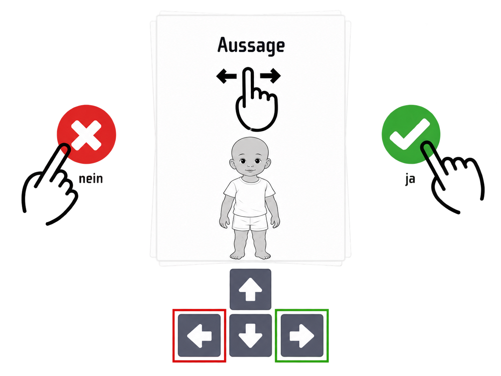

Anleitung
ANTWORTEN: Falls die gezeigte Aussage auf Ihr Kind zutrifft, wählen Sie JA: Dafür können Sie entweder auf das grüne Häkchen drücken oder die Karte nach rechts wischen. Um NEIN zu wählen, drücken Sie auf das rote Kreuz oder wischen sie die Karte nach links. Fall Sie an einem Computer sind, können Sie auch die Pfeiltasten verwenden (rechts = ja; links = nein).
UNSICHER? Das beschriebene Verhalten liegt bei Ihrem Kind schon etwas zurück? Wenn Ihr Kind das Verhalten früher einmal gezeigt hat, wählen Sie bitte trotzdem JA. Sie haben das beschriebene Verhalten bisher noch nicht beobachtet? Dann probieren Sie es gern einmal mit Ihrem Kind aus.
VERKLICKT? Sollten Sie sich einmal bei Ihrer Angabe verklickt haben, können Sie über den ZURÜCK Button noch einmal zur letzten Aussage zurückkehren.

Nun kann es losgehen – Vielen Dank und viel Spaß!


Impressum